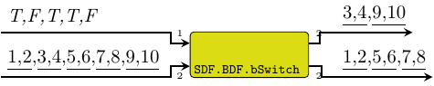
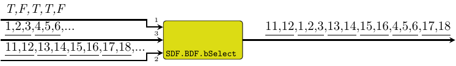

| Copyright | (c) George Ungureanu KTH/EECS/ESY 2018-2020 |
|---|---|
| License | BSD-style (see the file LICENSE) |
| Maintainer | ugeorge@kth.se |
| Stability | experimental |
| Portability | portable |
| Safe Haskell | Safe |
| Language | Haskell2010 |
ForSyDe.Atom.MoC.SDF.BDF
Contents
Description
The BDF library implements a DSL of atoms operating according to the Boolean,
respectively the integer dataflow model of computation, in terms of the atoms of
ForSyDe.Atom.MoC.SDF. As such SADF patterns are operating on
SDF signals, i.e. they have the exact same time semantics,
hence there is no need for MoC interfaces between these two MoCs.
BDF/IDF are early attempts to increase SDF's expresivity by allowing the dynamic redirecting of the data flow based on Boolean, respectively integer conditions. These MoCs introduce two new types of processes:
- switch is a process which takes one control signal (of a Boolean, respectively integer type) and one data signal, and redirects it to one of the outputs based on the control token.
- select is a process which takes one control signal (of Boolean, respectively integer type), a number of input channels associated with every control message. Each firing, a select process consumes tokens from one of the inputs based on the control token, and redirects them to the output.
While BDF/IDF languages have been shown to be Turing complete, their expressiveness comes at the cost of analyzability: many of the static analyses for liveness and boundness cannot be applied any longer for data-dependent dataflow. However, for certain well-behaved compositions (e.g. fork-join patterns), there are methods to derive equivalent SDF schedules. For more information of BDF/IDF please consult [Buck93].
To implement this library we reused everything: the BDF/IDF actors are implemented as specific ForSyDe.Atom.MoC.SDF.SADF patterns. We did not re-export anything from ForSyDe.Atom.MoC.SDF as it is supposed to be working alongside it anyway.
Useful pointers:
- ForSyDe.Atom contains general guidelines for using the API
- ForSyDe.Atom.MoC.SDF defines the synchronous dataflow MoC.
- ForSyDe.Atom.MoC.SDF.SADF defines the scenario-aware dataflow MoC.
Synopsis
- bSwitch :: Prod -> Signal Bool -> Signal a -> (Signal a, Signal a)
- bSelect :: (Cons, Cons) -> Signal Bool -> Signal a -> Signal a -> Signal a
- iSwitch2 :: Prod -> Signal Int -> Signal a -> (Signal a, Signal a)
- iSwitch3 :: Prod -> Signal Int -> Signal a -> (Signal a, Signal a, Signal a)
- iSwitch4 :: Prod -> Signal Int -> Signal a -> (Signal a, Signal a, Signal a, Signal a)
- iSelect2 :: (Cons, Cons) -> Signal Int -> Signal a -> Signal a -> Signal a
- iSelect3 :: (Cons, Cons, Cons) -> Signal Int -> Signal a -> Signal a -> Signal a -> Signal a
- iSelect4 :: (Cons, Cons, Cons, Cons) -> Signal Int -> Signal a -> Signal a -> Signal a -> Signal a -> Signal a
BDF Actors
bSwitch :: Prod -> Signal Bool -> Signal a -> (Signal a, Signal a) Source #
Switch process with a Boolean control signal.
>>>let s1 = signal [1..10]>>>let sb = signal [True,False,True,True,False]>>>bSwitch 2 sb s1({3,4,9,10},{1,2,5,6,7,8})

bSelect :: (Cons, Cons) -> Signal Bool -> Signal a -> Signal a -> Signal a Source #
Select process with a Boolean control signal.
>>>let s1 = signal [1..10]>>>let s2 = signal [11..20]>>>let sb = signal [True,False,True,True,False]>>>bSelect (3,2) sb s1 s2{11,12,1,2,3,13,14,15,16,4,5,6}

IDF Actors
Note that channels are indexed from 1 to n.